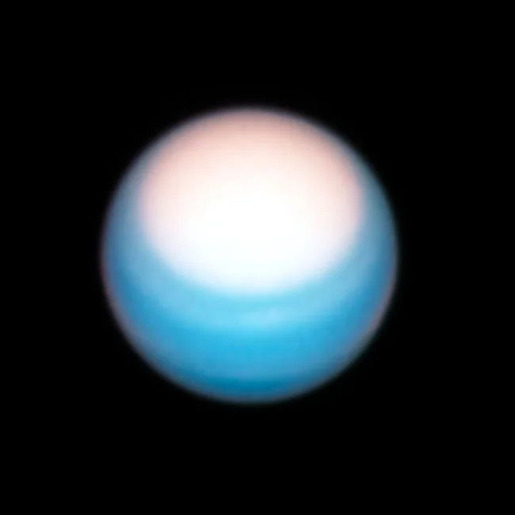

Uranus

Overview
Uranus is the seventh planet from the Sun and is known as an ice giant. Most of the planet is made of a hot, dense fluid of water, methane, and ammonia above a small rocky core. Methane in its atmosphere gives Uranus its pale blue-green color. Uranus is tilted so far over that it spins on its side, which gives it the most extreme seasons in the solar system. Each pole gets about 42 years of continuous sunlight, followed by 42 years of darkness.
Interesting Facts
- Uranus was the first planet discovered with the help of a telescope.
- Uranus has 13 known rings, and its moons are named after characters from the works of William Shakespeare and Alexander Pope.
Quick Facts
- Type: Ice giant
- Distance from Earth: 1.60-1.96 billion miles
- Size: 31,763 miles in diameter
- Discovery: Discovered by William Herschel in 1781